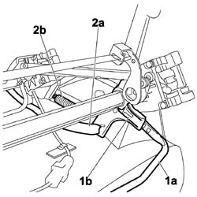
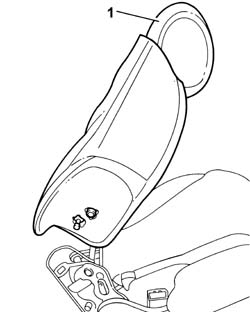
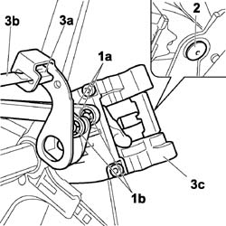

7050A18 REAR SEAT SQUAB - R+R
- Path
- Procedures > 70 FITTINGS > 7050 REAR SEATS > 7050A REAR SEAT ASSEMBLY > 7050A18 REAR SEAT SQUAB - R+R
- Kind
- repair procedure (removal / refitting; the operation number is the code)
- Applies to
- all engines; all production periods
- Interactive page
- https://sloeber94.github.io/elrnDB-fUlss/en/#/179007884
Applies to: all engines; all production periods
 Removing
Removing
 Refitting
Refitting- Carry out
Op. 7050A96 REAR SEAT GUARD (ONE) - R R
1. Release the slide lever (1a) by undoing the retaining clip (1b).
2. Release the seat lift link (2a) and spring (2b) from the slide device.

Applies to: all engines; all production periods
Removing
RefittingOp. 7050B10 L/H OR R/H HEAD RESTRAINT (ONE) OF REAR SEAT - R+R
Op. 7050B07 BUSHES FOR (ONE) REAR SEAT HEAD RESTRAINT LEFT OR RIGHT - R.R.
Op. 7050A98 QUICK RELEASE PASSENGER COMPARTMENT REAR SEATS - R.R.
Op. 7050A96 REAR SEAT GUARD (ONE) - R R
Op. 7050A68 LH OR RH PROTECTION (ONE) OF ONE REAR SEAT SQUAB RELEASE MECHANISM R R
1. Remove the rear seat backrest.

Applies to: all engines; all production periods
1. Release the links controlling device (1a) by undoing the retaining clips (1b).
2. Undo the bolt fixing the slide device.
3. Remove the retaining clip (3a) that secures the device to the release lever (3b) and remove the slide device (3c).

Applies to: all engines; all production periods
Refitting
RemovingOp. 7050A68 LH OR RH PROTECTION (ONE) OF ONE REAR SEAT SQUAB RELEASE MECHANISM R R
Op. 7050A96 REAR SEAT GUARD (ONE) - R R
Op. 7050A98 QUICK RELEASE PASSENGER COMPARTMENT REAR SEATS - R.R.
Op. 7050B07 BUSHES FOR (ONE) REAR SEAT HEAD RESTRAINT LEFT OR RIGHT - R.R.
Op. 7050B10 L/H OR R/H HEAD RESTRAINT (ONE) OF REAR SEAT - R+R
Applies to: all engines; all production periods
Refitting
Removing- Position the seat slide device in its seat.
- Position the new retaining clips on the device the refit the release lever.
- Tighten the bolt fixing the seat slide device.
- Do up the slide device control links and fit new retaining clips.
- Fit the seat lift link and spring to the slide device.
- Fit the slide lever.
- Carry out
Applies to: all engines; all production periods
Removing
Refitting- Carry out
Op. 7050A96 REAR SEAT GUARD (ONE) - R R
1. Release the slide lever (1a) by undoing the retaining clip (1b).
2. Release the seat lift link (2a) and spring (2b) from the slide device.
Applies to: all engines; all production periods
1. Release the links controlling device (1a) by undoing the retaining clips (1b).
2. Undo the bolt fixing the slide device.
3. Remove the retaining clip (3a) that secures the device to the release lever (3b) and remove the slide device (3c).
Applies to: all engines; all production periods
Refitting
Removing- Position the seat slide device in its seat.
- Position the new retaining clips on the device the refit the release lever.
- Tighten the bolt fixing the seat slide device.
- Do up the slide device control links and fit new retaining clips.
- Fit the seat lift link and spring to the slide device.
- Fit the slide lever.
- Carry out
Topics linked from this page (4)
- 7050A68 LH OR RH PROTECTION (ONE) OF ONE REAR SEAT SQUAB RELEASE MECHANISM R R
- 7050A96 REAR SEAT GUARD (ONE) - R R
- 7050B07 BUSHES FOR (ONE) REAR SEAT HEAD RESTRAINT LEFT OR RIGHT - R.R.
- 7050B10 L/H OR R/H HEAD RESTRAINT (ONE) OF REAR SEAT - R+R